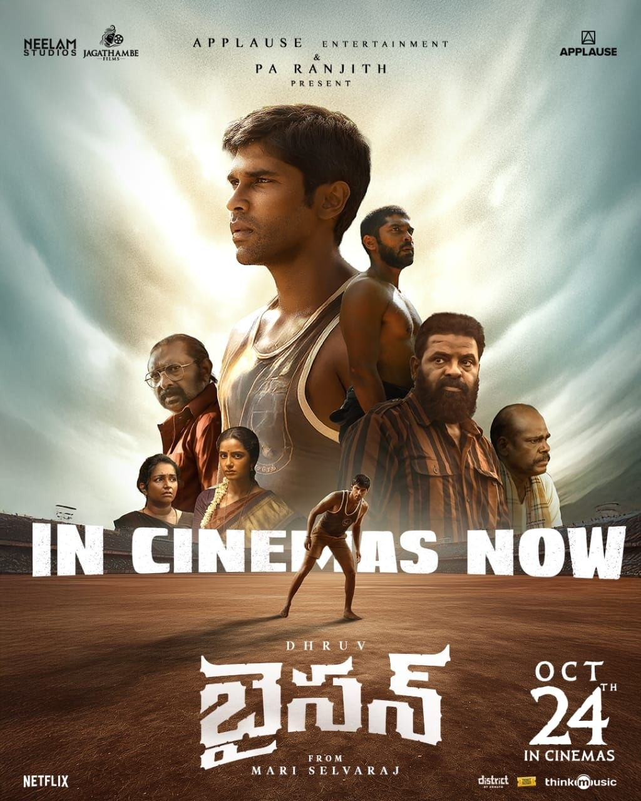

Director: മാരി ശെൽവരാജ്
Review by: ഷിജിൽ എം പി
ഇന്നലെ ഒരുപാട് നാളുകൾക്ക് ശേഷം ഒരു സിനിമ കണ്ടു.
BISON: Kaalamaadan (കാട്ടുപോത്ത്) - Tamil 2025
Bison എന്നു കേട്ടപ്പോൾ നായകൻ്റെ പേരാണെന്നാണ് ആദ്യം വിചാരിച്ചത്. പിന്നീടാണ് Bison എന്നു പറഞ്ഞാൽ കാട്ടുപോത്ത് ആണ് എന്ന് മനസിലായത്.
ഈ പടത്തിൻ്റെ റേഞ്ച് എന്താണെന്നറിയാൻ സംവിധായകൻ ആരെന്ന് മാത്രം നോക്കിയാൽ മതി - മാരി ശെൽവരാജ്.
തമിഴ്നാട്ടിലെ ഒരു ഉൾഗ്രാമത്തിൽ നടക്കുന്ന കഥ. അവിടെ തലമുറകളായി നാട്ടുകാർ രണ്ട് ചേരികളായി തിരിഞ്ഞ് പരസ്പരം കൊണ്ടും കൊടുത്തും പോരടിച്ചു ജീവിക്കുന്നു. ചേരികൾക്കുള്ളിൽ തന്നെ ജാതി പറഞ്ഞുള്ള അക്രമണങ്ങൾ വേറെ. അത്തരം സാഹചര്യത്തിൽ 'കിട്ടൻ' എന്നു പേരുള്ള ഒരു ചെറുപ്പക്കാരൻ ഒരു കബഡി കളിക്കാരനായി വളർന്ന് ഇന്ത്യൻ ടീമിൻ്റെ ഭാഗമായി മാറുന്നതാണ് കഥ. ജാതി രാഷ്ട്രീയവും കായിക മേഖലയിൽ നിലനിൽക്കുന്ന വേർതിരിവും നാട്ടിൽ സംഘങ്ങൾ തമ്മിലുള്ള കുടിപ്പകയുമൊക്കെ ഇതിൽ സമാന്തരമായി അവതരിപ്പിച്ചു പോകുന്നു.
വിക്രത്തിൻ്റെ മകൻ ധ്രുവ് വിക്രം ആണ് 'കിട്ടൻ' എന്ന കഥാപാത്രത്തെ അവതരിപ്പിച്ചിരിക്കുന്നത്. ചേച്ചിയായി രജിഷ വിജയനും കാമുകിയായി അനുപമ പരമേശ്വരനും അച്ഛനായി പശുപതിയും. എല്ലാവരും അവരവരുടെ മികവാർന്ന പ്രകടനം തന്നെയാണു പുറത്തെടുത്തിരിക്കുന്നത്.
ഇപ്പോൾ ഈ ചിത്രം Netflix ൽ കാണാം.